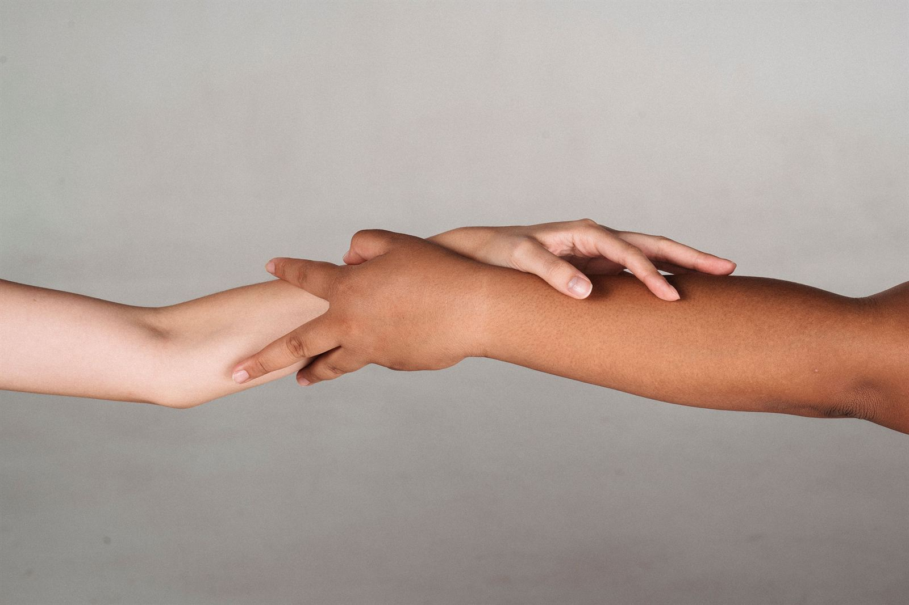

Sembilan bentuk kekerasan seksual menurut UU TPKS
Kekerasan seksual tidak selalu berupa sentuhan, dan tidak selalu dilakukan orang asing. Mengenali bentuknya membantu kita berkata dengan yakin: ini tidak benar, dan ini bukan salahmu.

Pada 2022, Indonesia mengesahkan Undang-Undang Nomor 12 Tahun 2022 tentang Tindak Pidana Kekerasan Seksual, yang sering disingkat UU TPKS. Undang-undang ini penting karena untuk pertama kalinya berbagai bentuk kekerasan seksual diakui secara jelas, termasuk yang dulu sering dianggap "bercanda" atau "urusan pribadi".
Berikut sembilan bentuk yang disebut dalam undang-undang itu, dijelaskan dengan bahasa sehari-hari.
1. Pelecehan seksual nonfisik
Ucapan, isyarat, tulisan, atau perbuatan bernuansa seksual yang ditujukan pada tubuh atau seksualitas seseorang dan membuatnya merasa direndahkan. Contohnya siulan dan komentar tentang tubuh di jalan, atau lelucon seksual yang terus diulang meski sudah diminta berhenti.
2. Pelecehan seksual fisik
Sentuhan atau kontak fisik bernuansa seksual tanpa persetujuan, misalnya meraba di kendaraan umum atau sengaja menempelkan tubuh.
3. Pemaksaan kontrasepsi
Memaksa seseorang memakai alat kontrasepsi dengan ancaman, tipu daya, atau penyalahgunaan kekuasaan, sehingga ia kehilangan kendali atas fungsi reproduksinya untuk sementara.
4. Pemaksaan sterilisasi
Seperti di atas, tetapi akibatnya permanen: seseorang dibuat tidak bisa memiliki keturunan tanpa persetujuan yang bebas.
5. Pemaksaan perkawinan
Memaksa seseorang menikah, termasuk menikahkan korban dengan pelaku dengan alasan "menutup aib". Perkawinan anak juga termasuk di dalamnya.
6. Penyiksaan seksual
Perbuatan seksual yang menyakiti atau merendahkan, dilakukan untuk mengintimidasi, menghukum, atau mendapatkan pengakuan dari seseorang.
7. Eksploitasi seksual
Memanfaatkan tubuh atau seksualitas seseorang untuk keuntungan, dengan memanfaatkan kerentanan, ketergantungan, atau kepercayaannya.
8. Perbudakan seksual
Membatasi kebebasan seseorang dan menjadikannya tidak berdaya untuk dieksploitasi secara seksual.
9. Kekerasan seksual berbasis elektronik
Merekam atau mengambil gambar bermuatan seksual tanpa izin, menyebarkan konten seksual seseorang tanpa persetujuannya, atau menguntit lewat perangkat elektronik untuk tujuan seksual. Ini tetap kekerasan meskipun foto atau videonya awalnya dibuat secara sukarela.
Kalau kamu mengenali salah satunya
Kamu tidak harus langsung melapor ke polisi. Kamu boleh mulai dengan bercerita ke orang yang kamu percaya, atau membuat laporan anonim di Haven untuk mendapat pendamping. Pendamping bisa membantumu memahami pilihan, termasuk layanan kesehatan, psikologis, dan bantuan hukum.
Sumber rujukan
- Undang-Undang Republik Indonesia Nomor 12 Tahun 2022 tentang Tindak Pidana Kekerasan Seksual, Pasal 4 ayat (1). Teks lengkap tersedia di JDIH BPK: peraturan.bpk.go.id.
- Komnas Perempuan, publikasi dan Catatan Tahunan: komnasperempuan.go.id.
- Kementerian Pemberdayaan Perempuan dan Perlindungan Anak: kemenpppa.go.id.